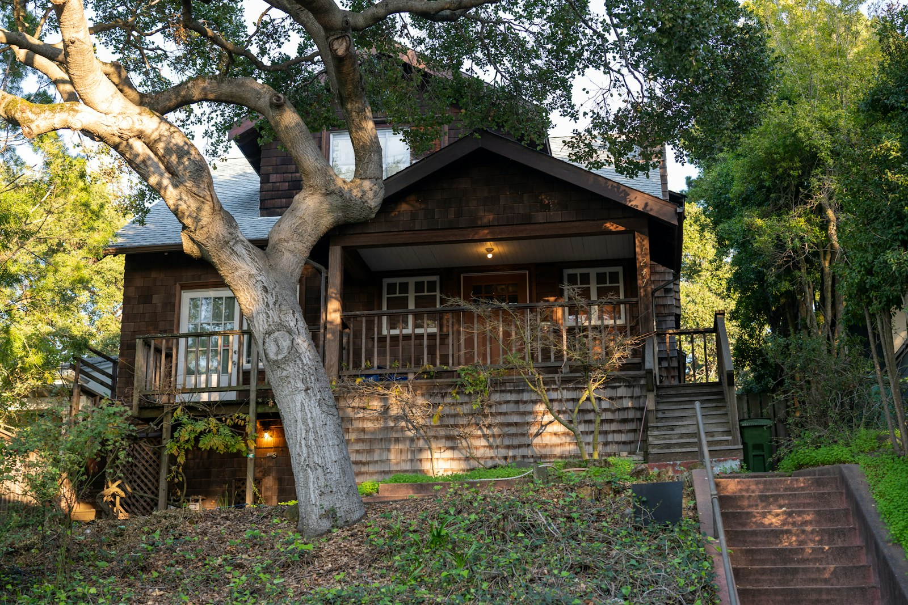
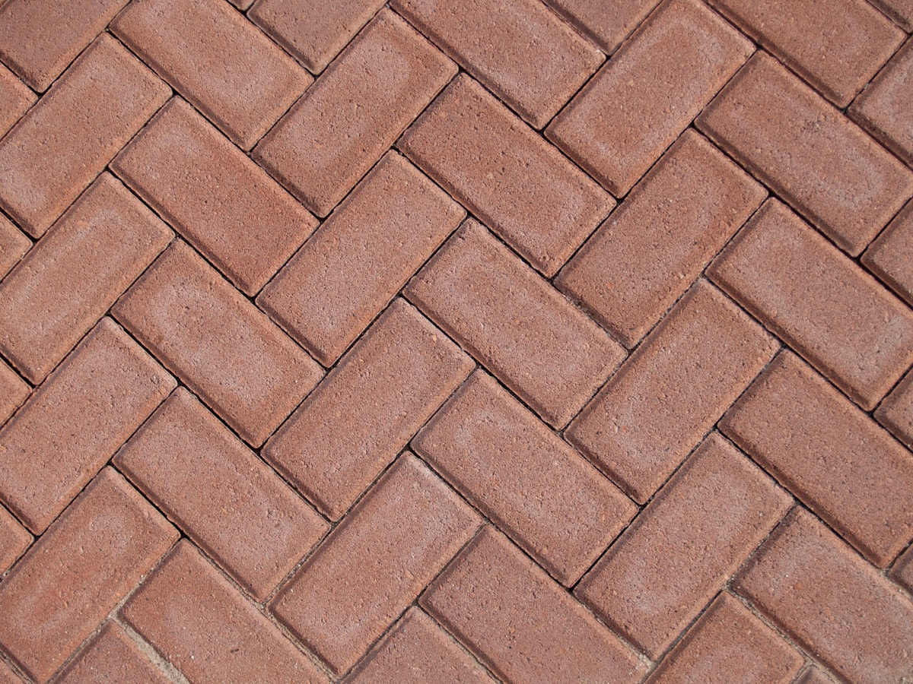

Expose the architecture
Clean foundation edges, siding, corners, decks, and vents so the home reads stronger.
Berkeley Hills fire-adapted landscape strategy
Zone 0 wildfire-readiness does not have to make a hillside home look stripped or sterile. We help you reduce ember risk, preserve privacy and landscape character, and redesign the first five feet with materials that look intentional.
Fire-adapted landscape design for Berkeley Hills homes where the landscape is part of the architecture.


Berkeley EMBER readiness
Berkeley Fire conducts annual defensible space inspections in the Grizzly Peak and Panoramic mitigation areas, both designated Very High Fire Hazard Severity Zones. The city’s approach emphasizes education and support, but homeowners still need a clear plan for Zone 0, fences, vegetation, documentation, and ongoing maintenance.
The risk
Wildfire embers can collect against walls, decks, vents, fences, and landscaping. When combustible material sits close to the structure, the home has less margin for error.
In the Berkeley Hills, that first five feet is also where homes get their softness, privacy, and hillside identity. The work is deciding what to remove, what to preserve, what to move outward, and what to replace with a more durable material palette.
Consultant framework
The technical goal is still ember resistance: if an ember lands within five feet of the structure, it should find little useful fuel. The premium goal is to make that buffer feel intentional, composed, and connected to the architecture.
Design principles
Clean foundation edges, siding, corners, decks, and vents so the home reads stronger.
Gravel, decomposed granite, stone, pavers, concrete, and steel edging should look composed, not dumped.
Preserve the hillside feeling by shifting planting layers and privacy strategy beyond Zone 0.
Use smarter Zone 1 planting, screening, grade changes, and layout instead of shrubs pressed against the home.
Garden strategy
Zone 0 should be lean, mineral, and easy to maintain. The garden does not disappear; it moves into smarter layers. Planting can still provide shade, privacy, color, and softness when it is spaced, grouped, maintained, and separated from the structure by durable hardscape and clean fuel breaks.
For Berkeley Hills homes, the best work often comes from replacing risky foundation planting with a composed buffer, then rebuilding the lush feeling with clustered planting, lower-maintenance groundcovers, thoughtful irrigation, and architectural paths or retaining edges farther out.
Use breathing room between planting groups so the garden feels intentional and fuel is not continuous.
Favor lower-growing, lower-litter, well-irrigated plantings outside Zone 0 over tall, dry, high-upkeep grasses.
Use stone, pavers, DG, walls, steps, and paths as beautiful fuel breaks rather than treating them as afterthoughts.
Combustible ground cover near walls, doors, and windows.
Debris that collects where wind and embers can settle.
Plants that create direct fuel near siding, glass, or eaves.
Combustible fences, gates, or trellises attached to the structure.
Primary ignition pathways
Mulch, leaves, and debris create a direct ignition route at the wall.
Combustible fencing can act like a wick when it touches the home.
Debris under or beside decks can expose joists and floor framing.
Nearby fuels and vulnerable vents can move ember risk into the structure.
Leaves in gutters can ignite near eaves, fascia, and roof edges.
Readiness layers
Reduce continuous fuel by removing risky Zone 0 material, thinning nearby plants, choosing leafy and lower-litter species where planting remains appropriate, and keeping the landscape maintained.
Stone patios, gravel bands, DG paths, concrete, masonry walls, and stepping-stone circulation can create separation while improving the architecture and outdoor living experience.
Before Red Flag events, movable combustibles matter: cushions, umbrellas, doormats, wood furniture, plastic accessories, firewood, and stored items should be moved away from the structure.
The solution
Upload foundation, deck, fence, entry, privacy, mulch, and planting photos.
We flag visible Zone 0 concerns and identify where the property can look better.
A local walkthrough maps remove, preserve, relocate, and upgrade opportunities.
Plan mineral materials, hardscape transitions, privacy moves, and adjacent planting.
Keep before/after photos, notes, and maintenance guidance for your records.
Services
Free
Quick educational review of visible Zone 0 concerns and curb-appeal opportunities.
Upload PhotosFrom $299
Marked-up photos showing remove, preserve, relocate, and upgrade zones.
Request ReviewFrom $750
Walkthrough, risk notes, aesthetic priorities, material direction, and documentation.
Request ConsultationConcept plan
Material palette, hardscape concepts, planting strategy, and contractor-ready scope.
Plan RedesignPaid design path
Use this path if you are ready to discuss a remote design review, on-site consultation, or full Zone 0 redesign. This keeps serious project inquiries separate from the free educational photo check.
Grant and insurance support
We help homeowners keep photos, scopes of work, invoices, and completion summaries in one place for insurance, HOA, grant, rebate, or resale conversations. We do not guarantee approval, discounts, or compliance determinations.
Berkeley Hills focus
Berkeley Hills properties often rely on mature planting for privacy, shade, softness, and identity. Zone 0 work is often necessary, but the right plan should also respect slope, drainage, entries, decks, legacy fencing, eucalyptus and pine proximity, and the visual relationship between the home and landscape.
Free first step
Send photos of the first five feet around your home. We will point out visible Zone 0 concerns and look for ways the property could become safer, cleaner, and more architecturally composed.
Who it helps
Reduce risk without making the property feel stripped or generic.
Offer neighborhood education that respects local landscape character.
Prepare hillside listings with stronger curb appeal and cleaner documentation.
Give clients a practical next step when wildfire risk becomes urgent.
FAQ
No. Our photo checks and readiness reviews are educational and practical. Formal compliance determinations depend on the relevant local authority, program, insurer, or inspector.
Many wildfire losses begin when wind-driven embers collect in vulnerable areas near the structure. Zone 0 reduces the chance that those embers find fuel at siding, decks, fences, vents, gutters, and corners.
No. We can help organize documentation that may be useful for insurance, HOA, grant, rebate, or resale conversations, but final decisions are made by those programs or organizations.
Initial focus is Berkeley Hills and nearby East Bay hillside neighborhoods, including North Berkeley, Kensington, Oakland Hills, Orinda, Lafayette, and adjacent high fire-risk communities by fit and availability.
Some homes only need targeted clearing and material replacement. Others benefit from a design plan when privacy, entry sequence, slopes, drainage, fences, decks, or mature planting make the decision more sensitive.
It can if the work is treated as basic removal. The design-forward approach replaces combustible clutter near the structure with an intentional mineral palette, then moves softness, privacy, and planting depth into safer adjacent zones.